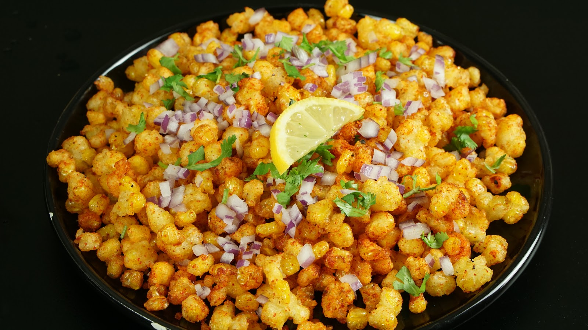

पेट पूजा भोजनालय
આવો ને મારા વ્હાલા, મજા જ મજા છે
આવો ને મારા વ્હાલા, મજા જ મજા છે


Baby Corn 65 Recipe, a tasty, crispy addictive starter or appetizer made with fresh baby corn. Cooked baby corn is tossed in spices, ginger, garlic, lemon juice, plain flour, corn starch coating and fried till crispy which is similar to golden fried baby corn.
IngredientsSweet Corn Kernels, Curd (Yogurt), Gram Flour (Besan), Rice Flour, Ginger-Garlic Paste, Red Chilli Powder, Turmeric Powder, Garam Masala, Curry Leaves, Green Chilies, Lemon Juice, Salt, Vegetable Oil